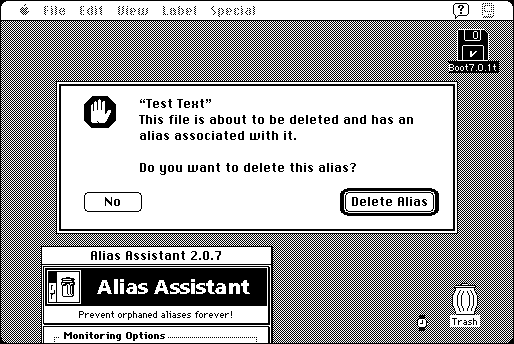

Download
Alias_Assistant_2.0.7.zip (86K) Alias Assistant 2.0.7 repackaged into a zipped hfs disk image and checksum file. The disk image can be mounted with Mini vMac.
Alias_Assistant_2.0.7.sit.hqx (115K) Alias Assistant 2.0.7 in the original format.
copyright: Maurice Volaski
mod date: Sep 8, 1995
license: shareware
from url :
Welcome to Flux Software
“Enables your Macintosh to automatically delete all the alias files associated with an original file when the original file is emptied from the Trash.” For System 7.

If you find these downloads useful, please consider helping the Gryphel Project, which hosts them.
Here are the md5 checksums for the downloads, signed with Gryphel Key 5:
--------- GRY SIGNED TEXT --------- 2007a37a106dd8b66d8661eb54a914ca Alias_Assistant_2.0.7.zip f9bc68bc0c5dda0b70e421d000254423 Alias_Assistant_2.0.7.sit.hqx ------- BEGIN GRY SIGNATURE ------- Gry/4Xa8CFcUzxdN/NxJrymOM9ySyCJCQ6x6nDyXaRtXBv9v0VaeesOcRsN7ec5u DPrmU2nsbSB6q8bPB7nha0ZWVg1+RDrhfblqy99Bqd2Pm5YcpQZFnDDnqJsUqsgN c4PmbobikNJPdvjMAd2gXHQIszXh1aBC4RJ0uO6eyCz4pyTUtWif1aoFa9/KvwU2 -------- END GRY SIGNATURE --------